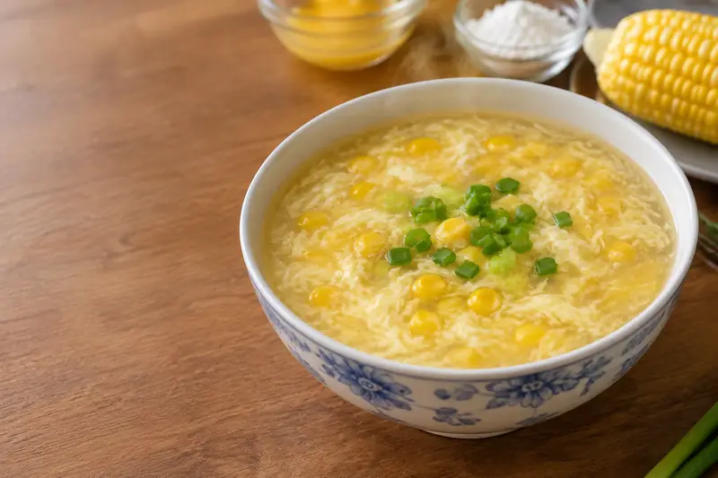
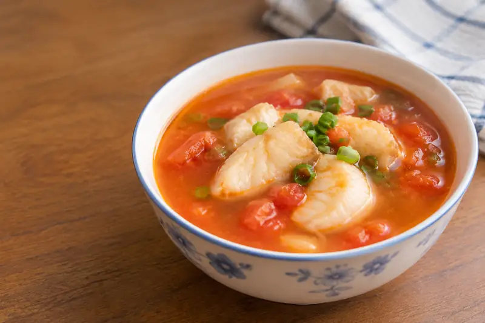
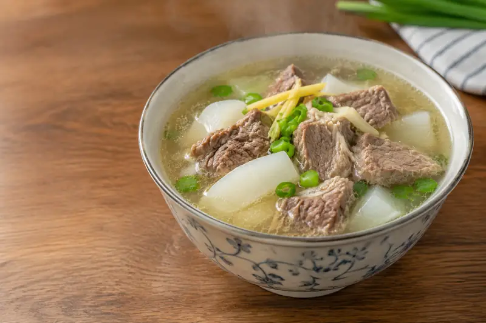
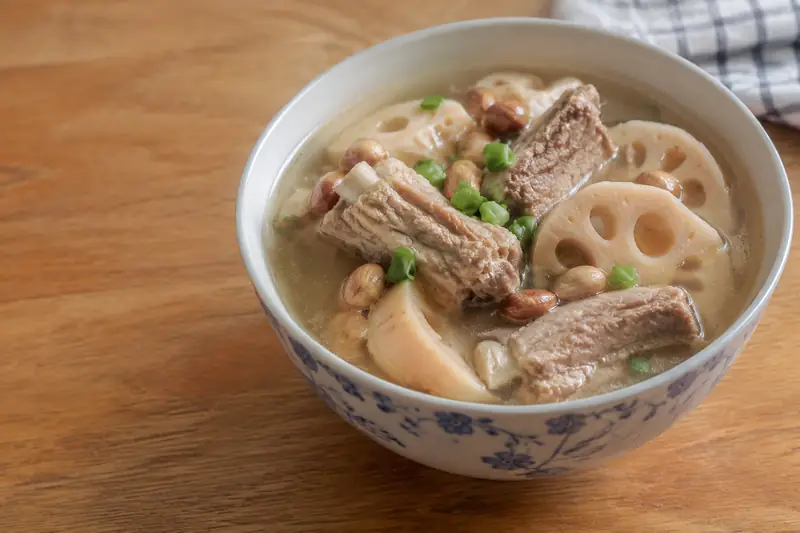
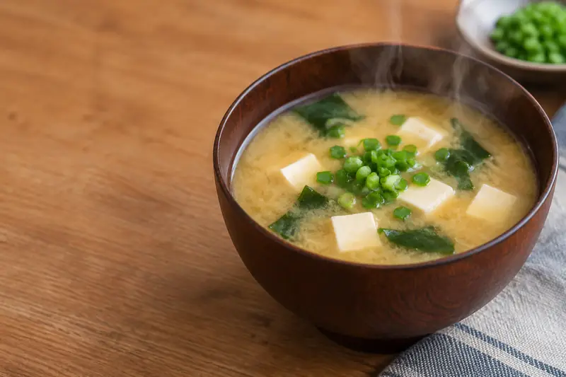
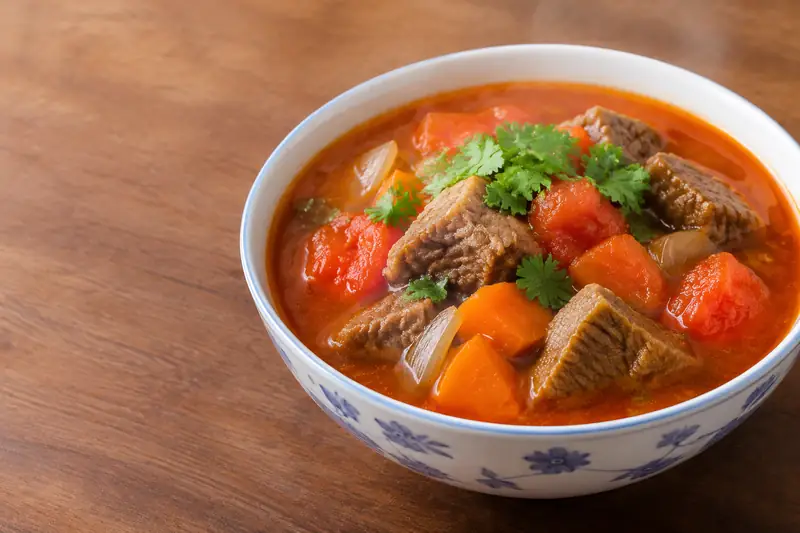

Soups汤品专区
Soups you can cook here now, then a reference list of 38 soups from around the world; full recipes for these come in the next batch.现在就能做的汤，后面是世界 38 道汤的参考清单；这些汤的完整菜谱在下一批加入。
Recipes菜谱
 Harbin-style Borscht with Beef and Cabbage罗宋汤（哈尔滨红汤）120 min分钟 · 6 servings份 · Northeastern Chinese东北
Harbin-style Borscht with Beef and Cabbage罗宋汤（哈尔滨红汤）120 min分钟 · 6 servings份 · Northeastern Chinese东北 Chicken Noodle Soup美式鸡肉蔬菜面汤50 min分钟 · 6 servings份 · Western西式New England Clam Chowder新英格兰蛤蜊汤60 min分钟 · 4 servings份 · Western西式
Chicken Noodle Soup美式鸡肉蔬菜面汤50 min分钟 · 6 servings份 · Western西式New England Clam Chowder新英格兰蛤蜊汤60 min分钟 · 4 servings份 · Western西式
Sweet Corn Egg Drop Soup粟米蛋花汤25 min分钟 · 4 servings份 · Cantonese粤 Corn and Pork Rib Soup玉米排骨汤110 min分钟 · 4 servings份 · Cantonese粤Tomato Egg Drop Soup番茄蛋花汤17 min分钟 · 2 servings份 · Chinese home-style家常
Corn and Pork Rib Soup玉米排骨汤110 min分钟 · 4 servings份 · Cantonese粤Tomato Egg Drop Soup番茄蛋花汤17 min分钟 · 2 servings份 · Chinese home-style家常
Tomato Fish Soup番茄鱼片汤30 min分钟 · 4 servings份 · Chinese home-style家常 Hot and Sour Soup酸辣汤27 min分钟 · 4 servings份 · Sichuan川
Hot and Sour Soup酸辣汤27 min分钟 · 4 servings份 · Sichuan川 Kimchi and Tofu Stew (Kimchi-jjigae)泡菜豆腐汤（kimchi-jjigae）45 min分钟 · 2 servings份 · Korean韩Clear Lamb Hot Pot清汤羊肉锅125 min分钟 · 4 servings份 · Chinese home-style家常
Kimchi and Tofu Stew (Kimchi-jjigae)泡菜豆腐汤（kimchi-jjigae）45 min分钟 · 2 servings份 · Korean韩Clear Lamb Hot Pot清汤羊肉锅125 min分钟 · 4 servings份 · Chinese home-style家常
Lamb and Daikon Soup白萝卜羊肉汤110 min分钟 · 4 servings份 · Chinese home-style家常Lamb Soup with Bread羊肉泡馍（家常版）115 min分钟 · 3 servings份 · Northwestern / Xinjiang西北/新疆
Lotus Root and Pork Rib Soup莲藕排骨汤95 min分钟 · 4 servings份 · Cantonese粤 Minestrone意式蔬菜汤（Minestrone）55 min分钟 · 6 servings份 · Italian意
Minestrone意式蔬菜汤（Minestrone）55 min分钟 · 6 servings份 · Italian意
Tofu Miso Soup豆腐味噌汤15 min分钟 · 4 servings份 · Japanese日 Salmon Chowder三文鱼土豆浓汤45 min分钟 · 6 servings份 · Western西式
Salmon Chowder三文鱼土豆浓汤45 min分钟 · 6 servings份 · Western西式 Shrimp Wonton Soup鲜虾云吞汤40 min分钟 · 4 servings份 · Cantonese粤
Shrimp Wonton Soup鲜虾云吞汤40 min分钟 · 4 servings份 · Cantonese粤 Spinach and Tofu Soup菠菜豆腐汤17 min分钟 · 3 servings份 · Chinese home-style家常
Spinach and Tofu Soup菠菜豆腐汤17 min分钟 · 3 servings份 · Chinese home-style家常 Pickled Cabbage and Pork Belly Stew酸菜白肉95 min分钟 · 4 servings份 · Northeastern Chinese东北Seafood Soft Tofu Stew海鲜嫩豆腐汤35 min分钟 · 3 servings份 · Korean韩
Pickled Cabbage and Pork Belly Stew酸菜白肉95 min分钟 · 4 servings份 · Northeastern Chinese东北Seafood Soft Tofu Stew海鲜嫩豆腐汤35 min分钟 · 3 servings份 · Korean韩
Tomato Beef Brisket Soup西红柿牛腩汤140 min分钟 · 4 servings份 · Chinese home-style家常Watercress Soup西洋菜汤110 min分钟 · 4 servings份 · Cantonese粤 Winter Melon and Shrimp Soup冬瓜虾仁汤40 min分钟 · 4 servings份 · Chinese home-style家常
Winter Melon and Shrimp Soup冬瓜虾仁汤40 min分钟 · 4 servings份 · Chinese home-style家常 West Lake Beef Soup西湖牛肉羹25 min分钟 · 4 servings份 · Jiangnan江浙
West Lake Beef Soup西湖牛肉羹25 min分钟 · 4 servings份 · Jiangnan江浙Around the world (reference)世界汤谱（参考）
- Tomato & Egg Drop Soup番茄蛋花汤 20 min中国·家常 · 20 分钟
Bright sweet-sour tomato, silky egg ribbons; mild smell; no heat.酸甜番茄底、蛋花滑嫩；气味温和；不辣。 - Corn, Carrot & Pork Rib Soup玉米胡萝卜排骨汤 75 min中国·广东 · 75 分钟
Naturally sweet clear broth from corn and carrot; very mild; no heat.玉米和胡萝卜带出的清甜汤底；气味很淡；不辣。 - Roasted Butternut Squash Soup烤南瓜浓汤 50 min北美 · 50 分钟
Velvety, naturally sweet, gently spiced; very mild; no heat.丝绒般顺滑、天然甜，一点点肉桂或姜；气味很淡；不辣。 - Minestrone (Italian Vegetable & Bean Soup)意式蔬菜豆汤 45 min意大利 · 45 分钟
Tomato-vegetable broth, soft beans, small pasta, parmesan; mild; no heat.番茄蔬菜汤里有软豆子和小意面，撒帕玛森芝士；气味温和；不辣。 - Mercimek Çorbası (Turkish Red Lentil Soup)土耳其红扁豆浓汤 40 min土耳其／中东 · 40 分钟
Velvety blended lentil-carrot soup, lemon squeeze; mild aroma; heat 0 (paprika butter optional).扁豆胡萝卜打成丝绒般的浓汤，挤柠檬；气味温和；不辣（可淋红椒油）。 - Chicken Noodle Soup北美鸡肉面条汤 55 min北美 · 55 分钟
Clean chicken broth, soft egg noodles, carrot and celery; very mild; no heat.清鸡汤配软鸡蛋面、胡萝卜芹菜；气味很淡；不辣。北美孩子的「家的味道」。 - Avgolemono (Greek Lemon-Egg Chicken & Rice Soup)希腊柠檬鸡蛋鸡汤 40 min希腊 · 40 分钟
Silky, lemony, comforting—creamy without cream; mild; no heat.不放奶油却丝滑，柠檬清香；气味温和；不辣。 - Pacific Salmon & Corn Chowder太平洋三文鱼玉米浓汤 40 min北美·加拿大西海岸 · 40 分钟
Creamy potato-corn base with tender salmon flakes; mild (cream softens fish smell); no heat.土豆玉米奶油底，三文鱼嫩块；奶香盖住鱼味，气味温和；不辣。 - Winter Melon & Pork Meatball Soup冬瓜丸子汤 30 min中国·家常 · 30 分钟
Tender meatballs, melon turns translucent and soft; mild; no heat.丸子嫩、冬瓜煮到透明软糯；气味温和；不辣。 - Miso Soup with Tofu & Wakame日式味噌汤 10 min日本 · 10 分钟
Savory, gentle umami; soft tofu; mild-medium fermented aroma; no heat.咸鲜温和，豆腐软嫩；发酵豆香中等偏轻；不辣。 - Chinese Yam (Shanyao) & Pork Rib Soup山药排骨汤 70 min中国·家常汤 · 70 分钟
Silky, slightly creamy yam pieces in clear broth; very mild; no heat.山药煮后绵软微黏，汤清；气味很淡；不辣。 - Cod & Tofu Soup with Ginger鳕鱼豆腐汤 25 min中国·江南家常（改良） · 25 分钟
Milky-white broth after a quick sear; ginger keeps it clean; low fishiness with cod; no heat.鱼块先煎再加开水，汤色奶白；姜葱压住腥味，鳕鱼本身腥味很轻；不辣。 - Tom Kha Gai (Thai Coconut Chicken Soup)泰式椰奶鸡汤 25 min泰国 · 25 分钟
Creamy coconut, lemongrass and lime; medium citrus aroma; heat 0–1/3 (chili optional).椰奶顺滑、香茅青柠清香；香气中等；辣椒可不放。 - Miyeokguk (Korean Seaweed & Beef Soup)韩式牛肉海带汤 40 min韩国 · 40 分钟
Savory sesame-beef broth with slippery soft seaweed; mild sea smell; no heat.香油炒牛肉做底，裙带菜软滑；海味轻；不辣。韩国生日汤。 - Masoor Dal (Indian Red Lentil Soup)印度红扁豆汤 35 min印度 · 35 分钟
Smooth, porridge-like, turmeric-cumin warmth; medium spice aroma; heat 0–1/3.顺滑如稀粥，姜黄孜然的暖香；香料味中等；辣度可 0。 - Lotus Root & Pork Rib Soup莲藕排骨汤 90 min中国·湖北／广东 · 90 分钟
Starchy lotus root turns soft or stays crunchy depending on variety; earthy-sweet; mild; no heat.粉藕煮久了软糯拉丝，脆藕清爽；汤带淡淡甜味；气味温和；不辣。 - Snow Fungus, Lotus Seed & Lily Bulb Sweet Soup银耳莲子百合羹 90 min中国·甜汤 · 90 分钟
Jelly-like snow fungus, soft lotus seeds, faint floral lily; lightly sweet; no smell; no heat.银耳煮到出胶、莲子粉糯、百合微清香；淡甜；几乎无气味；不辣。 - Phở Gà (Vietnamese Chicken Noodle Soup)越南鸡肉河粉 60 min越南 · 60 分钟
Clear, spiced (star anise, cinnamon) chicken broth with rice noodles; medium aroma; no heat unless chili added.清澈鸡汤带八角桂皮香，配河粉；香料味中等；不加辣椒就不辣。 - Tonjiru (Pork & Root Vegetable Miso Soup)日式猪肉根菜味噌汤（豚汁） 35 min日本 · 35 分钟
Hearty miso broth with thin pork and soft root vegetables; mild; no heat.比普通味噌汤厚实，薄猪肉片配软根菜；气味温和；不辣。 - Harira (Moroccan Chickpea, Lentil & Tomato Soup)摩洛哥鹰嘴豆番茄汤 50 min摩洛哥／北非 · 50 分钟
Tomato-rich, warmly spiced (cinnamon, ginger), herby; medium aroma; heat 0–1/3.番茄浓、肉桂姜香、香菜芹菜清香；香料味中等；基本不辣。斋月开斋汤。 - Laver Seaweed & Tofu Soup紫菜豆腐汤 10 min中国·家常 · 10 分钟
Light, briny, very quick; mild-to-medium sea smell; no heat.清淡带海味，五分钟成汤；海味中等偏轻；不辣。 - Lebanese Chicken, Vegetable & Bulgur Soup黎巴嫩鸡肉碎麦蔬菜汤 45 min黎巴嫩／中东 · 45 分钟
Light chicken broth with lemon and allspice, chewy bulgur; mild aroma; no heat.清淡鸡汤带柠檬与多香果香，碎麦有嚼劲；气味温和；不辣。 - Stracciatella (Roman Egg-Drop Soup)罗马蛋花芝士汤 12 min意大利 · 12 分钟
Chicken broth with parmesan-egg shreds and spinach; very mild; no heat.鸡汤里打入芝士蛋液成碎花，配菠菜；气味很淡；不辣。中国孩子会觉得像蛋花汤。 - Hot & Sour Soup酸辣汤 30 min中国·川渝／北方 · 30 分钟
Tangy vinegar, white-pepper heat, chewy mushrooms; medium smell; heat 2/3 (adjustable).醋香、白胡椒的辣，木耳香菇有嚼劲；气味中等；辣度 2/3（胡椒可减）。 - Canh Chua (Vietnamese Sweet-Sour Fish Soup)越南酸鱼汤 30 min越南 · 30 分钟
Tamarind sour, pineapple sweet, fresh herbs; medium herb smell; heat 1/3 optional.罗望子酸、菠萝甜、香草清新；香草味中等；可加辣（1/3）。 - Mung Bean Sweet Soup绿豆汤 45 min中国·家常甜汤 · 45 分钟
Earthy, lightly sweet; soupy or thick; mild; no heat. Good chilled.豆香、淡甜，可清可稠；气味温和；不辣；冷藏后更好喝。 - Potage Parmentier (French Potato-Leek Soup)法式土豆韭葱浓汤 40 min法国 · 40 分钟
Smooth, buttery, gentle onion sweetness; mild; no heat.顺滑绵密，韭葱带温和甜味；气味温和；不辣。冷着喝就是 Vichyssoise。 - Borscht (Ukrainian Beet & Vegetable Soup)乌克兰红菜汤（罗宋汤） 90 min乌克兰／东欧 · 90 分钟
Earthy-sweet beets, sweet-sour tomato, cabbage; dollop of sour cream; mild-medium smell; no heat.甜菜的泥土甜、番茄酸甜、卷心菜，配一勺酸奶油；气味中等偏轻；不辣。上海罗宋汤的源头之一。 - Doenjang Jjigae (Korean Soybean Paste Stew)韩式大酱汤 25 min韩国 · 25 分钟
Deep fermented soybean savoriness, zucchini and tofu; strong aroma; heat 1/3 optional.发酵大酱的浓香，西葫芦豆腐；气味较重；可加少许辣椒（1/3）。 - Gulyásleves (Hungarian Goulash Soup)匈牙利牛肉汤 100 min匈牙利 · 100 分钟
Paprika-red beef and potato soup; warm, smoky; medium aroma; heat 0–1/3 (sweet paprika).红椒粉染红的牛肉土豆汤，暖、微烟熏；气味中等；用甜红椒粉就不辣。 - Krupnik (Polish Barley & Mushroom Soup)波兰大麦蘑菇汤 65 min波兰／东欧 · 65 分钟
Chewy pearl barley, earthy mushrooms, dill; mild-medium; no heat.珍珠大麦有嚼劲，蘑菇香，莳萝点缀；气味中等偏轻；不辣。 - Sopa de Tortilla (Mexican Tortilla Soup)墨西哥番茄鸡肉玉米片汤 40 min墨西哥 · 40 分钟
Smoky tomato-chili broth, crispy tortilla strips, avocado, lime; medium aroma; heat 1/3 (adjustable).烟熏番茄辣椒汤底，脆玉米饼条、牛油果、青柠；香气中等；辣度 1/3 可调。 - Tom Yum Goong (Thai Hot & Sour Shrimp Soup)冬阴功汤 30 min泰国 · 30 分钟
Sharp sour-spicy, very aromatic; strong smell; heat 2–3/3.酸辣冲鼻、香气浓；气味重；辣度 2–3/3。 - French Onion Soup法式洋葱汤 80 min法国 · 80 分钟
Deep caramelized-onion sweetness, beefy broth, cheese toast lid; strong aroma; no heat.洋葱慢炒到焦糖色的深甜，牛肉汤底，盖芝士烤面包；香气浓；不辣。 - Gazpacho (Andalusian Chilled Tomato Soup)西班牙番茄冷汤 15 min西班牙 · 15 分钟
Cold, fresh, tangy tomato-cucumber; raw garlic can be strong; no heat.冰凉清爽，番茄黄瓜的酸甜；生蒜味可减；不辣。夏天不开火。 - Cuban Black Bean Soup古巴黑豆汤 35 min古巴／加勒比 · 35 分钟
Thick, earthy, cumin-oregano; partly blended; medium aroma; heat 0.浓稠、豆香，孜然牛至调味，部分打碎；香气中等；不辣。 - Split Pea Soup (Québec-style)魁北克黄豌豆汤 100 min加拿大·魁北克 · 100 分钟
Thick, smoky-ham, earthy pea; mild-medium smell; no heat.浓稠、豌豆香带火腿烟熏味；气味中等偏轻；不辣。加拿大的老派冬日汤。 - West African Peanut Soup (Groundnut Soup)西非花生番茄鸡汤 45 min西非（加纳／塞内加尔） · 45 分钟
Rich, nutty-tomato, sweet potato; medium aroma; heat 1/3 (scotch bonnet optional).花生酱与番茄的浓郁，配红薯；香气中等；辣椒可选（1/3）。